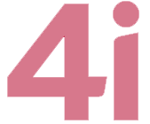
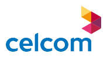
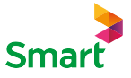
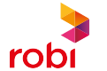
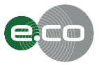
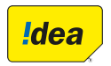

About
The Report
This year’s Sustainability Report, ‘Our Commitment to Development: Towards a Digital Future’ is our second standalone report against the Global Reporting Initiative (GRI – G4) guidelines. This report continues the narrative from 2013 which introduced Axiata’s approach to promoting sustainability within the Group.
The mobile telecommunications industry has moved from facilitating voice and short messaging services (SMS) to a dynamic new digital platform where the services we support empower communities where we operate. This report discusses the approach taken by the Group to create sustainable digital ecosystems within each of our four sustainability pillars.
In this year’s report, we share our journey towards creating sustainable digital ecosystems by examining four key aspects: the improvements we have engineered; the innovations we have seen; the investments we have made; and the impact we have had.
This report discloses the developments in each of the pillars in four different aspects. They are:

• Improvements made to projects disclosed last year
• Innovations & new projects introduced this year
• Investments made for significant projects
• Impact of the key programmes and their developments from a socio economic
Notes:
Forward Looking Statements
This report contains forward-looking statements characterised by the use of words and phrases such as “might” “forecast” “anticipate”, “project”, “may”, “believe”, “predict”, “expect”, “continue”, “will”, “estimate”, “target,” and other similar expressions. Our business operates in an ever-changing macro environment. As such, our business is subject to uncertainties that could cause actual results to differ from those reflected in the forward-looking statements. Such statements reflect the expectations of the Group and may or may not turn out as predicted.
Changes from Previous Report
Our 2013 report scope did not include the passive infrastructure of our operations currently managed by edotco, covering a network of over 13,000 sites in Malaysia, Bangladesh, Cambodia and Sri Lanka. This report, however includes and discusses the impact of these operations and discloses sustainable measures taken currently within edotco as well.
Axiata’s 2014 Sustainability Report presents our Economic, Social and Environmental progress for the year ending 31 December 2014. It discloses the Group’s management approach in relation to 24 material aspects, covering 34 indicators, of the Global Reporting Initiative’s G4 guidelines1. Page 019 details out the materiality mapping process for Axiata Group and its operating companies (OpCos). This Sustainability Report should be read in conjunction with the Axiata Group Berhad Annual Report 2014. We welcome any feedback on our approach to sustainability, and on our report. You may direct such feedback or other communication to sustainability@axiata.com
The 2014 Axiata Sustainability Report covers the sustainability performance of Axiata Group Berhad but is limited to operations where Axiata held a majority of the shares for the 12-month period ending 31st December 2014. These entities include:
• Axiata Group Berhad
• Celcom Axiata Berhad
• PT XL Axiata Tbk
• Dialog Axiata PLC
• Robi Axiata Limited
• Smart Axiata Company Limited
• edotco Group Sdn Bhd
Since the operating environments in the five companies and the infrastructure operations differ significantly, the sustainability context and materiality would differ between each Opco. Due to this, the disclosure will be indexed with the colour logos of each company to indicate the relevance of the account. While this report discusses the sustainability approach of the Group as a whole, individual Sustainability Reports are available for XL, Dialog, Robi and Smart providing more specific details of the OpCo operations in their own markets.
To access sustainability initiatives and stories of our OpCo countries and associates, please click on the logo below.






 Back
Back